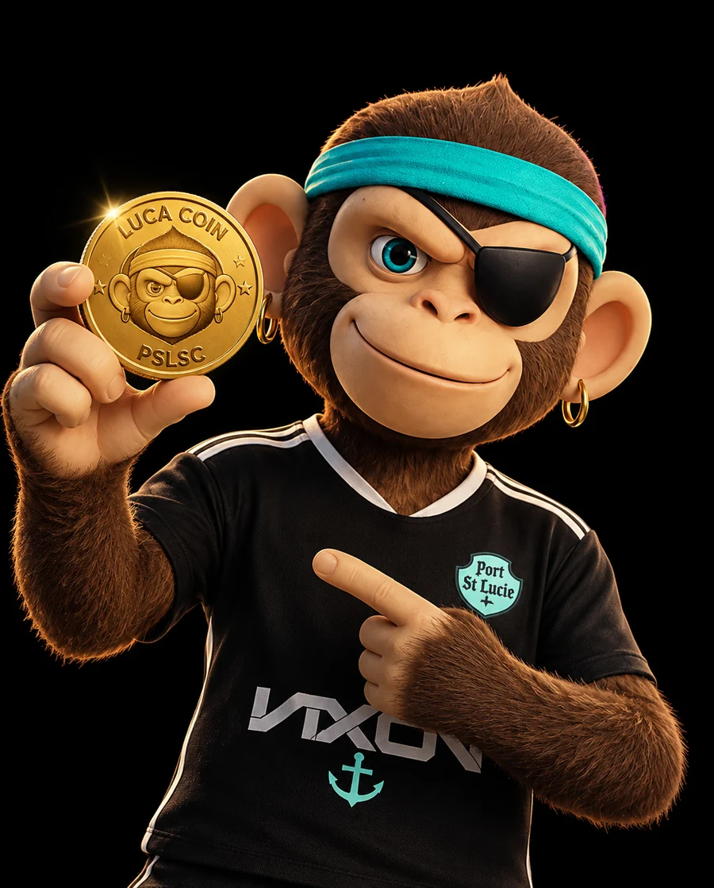

Los créditos pueden conectar toda la experiencia PSLSC
Academy · Clinics · Matchday · Facilities · Store · Community
Partimos de un pedido concreto y descubrimos una oportunidad mucho mayor.
El pedido
Crear una experiencia digital para vender actividades de la Academy utilizando un sistema de créditos.
La oportunidad
Convertir esos créditos en una unidad común capaz de conectar toda la relación de una persona con el club.
¿Por qué construir un ecosistema?
Cada interacción con el club es una oportunidad para construir una relación más profunda.
Un ecosistema permite conectarlos y convertirlos en una relación continua.

Una sola plataforma para toda la relación con el club
No proponemos solamente un front para vender actividades de la Academy.
Proponemos un espacio donde cada persona pueda:
Una identidad. Una cuenta. Una relación continua con el club.
- Participar de experiencias
- Comprar y utilizar créditos
- Recibir beneficios
- Relacionarse con distintas áreas del club
- Volver una y otra vez al mismo ecosistema
Los créditos se convierten en una herramienta de participación
Los créditos no sirven solamente para pagar.
También pueden ayudar al club a incentivar comportamientos y fortalecer el vínculo con su comunidad.
POR EJEMPLO
El crédito empieza a conectar participación, pertenencia y consumo.
Esto puede crecer junto con el club
Hoy
Identidad + créditos + actividades.
Después
Historial de cada persona y de su relación con el club.
Más adelante
Un ecosistema completamente conectado.
En el futuro, la misma identidad podría permitir entrar al estadio, consumir, acceder a beneficios, regalar créditos o participar de nuevas experiencias.
No estamos diseñando solamente para lo que PSLSC es hoy, sino para lo que puede convertirse mañana.
Un ecosistema, múltiples puntos de contacto
Todos conectados a una misma identidad y a una misma economía de créditos.
Esto no es una web. Es un producto digital.
Para que este ecosistema funcione, hay decisiones de producto que todavía necesitamos definir.
Antes de construir pantallas, tenemos que diseñar el sistema.
El próximo paso es diseñar el producto
Si estamos alineados con esta visión, proponemos avanzar hacia una etapa de definición.
El objetivo será convertir esta oportunidad en un producto concreto:
Personas
Journeys
Reglas
Alcance
Roadmap
A partir de esa definición podremos establecer con precisión:
qué construir, cómo construirlo, en qué etapas y con qué inversión.
Hablemos
Si estamos alineados con esta visión, el próximo paso es sentarnos a definir el producto.
¿Tenés alguna duda sobre esta propuesta?
Preguntale lo que quieras al asistente. Tiene acceso al contenido completo de esta propuesta.
Este asistente responde exclusivamente sobre el contenido de esta propuesta. Puede cometer errores. Para consultas formales, escribí a contact@yacare.io.